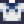

Angolna
Ugrás a navigációhoz
Ugrás a kereséshez


| Angolna | ||||||||||||||||||||||||||||||||||
| Egy hosszú, csúszós kis hal. | ||||||||||||||||||||||||||||||||||
| Információ
| ||||||||||||||||||||||||||||||||||
| Megtalálható | Óceán | |||||||||||||||||||||||||||||||||
| Napszak | du 4 – de 2 | |||||||||||||||||||||||||||||||||
| Évszakok | ||||||||||||||||||||||||||||||||||
| Időjárás | ||||||||||||||||||||||||||||||||||
| Nehézség | 70 | |||||||||||||||||||||||||||||||||
| Viselkedés | Egyenletes | |||||||||||||||||||||||||||||||||
| Hossz (hüvelyk) | 30–206
| |||||||||||||||||||||||||||||||||
| Horgászási TP | 26 | |||||||||||||||||||||||||||||||||
| Energia / Életerő |
| |||||||||||||||||||||||||||||||||
| ||||||||||||||||||||||||||||||||||
| ||||||||||||||||||||||||||||||||||
Az Angolna egy hal amit az óceánban találsz Tavasszal, illetve Ősszel, amikor esik az eső délután 4 és hajnali 2 között. Tavasszal és ősszel ritkán a szemetesekben is található.
Térkép
Az angolna az óceánban található
Ajándékozás
| Falusiak reakciója
| |
|---|---|
| Normál | |
| Nem kedvelt | |
| Utált | |
Csomag
Az angolna kell az  éjszakai halak csomagban a haltartályban
éjszakai halak csomagban a haltartályban
Receptek
| Kép | Név | Leírás | Hozzávalók | Energia / Életerő | Állapothatás | Állapothatás időtartama | A recept forrása | Eladási ár | |||
|---|---|---|---|---|---|---|---|---|---|---|---|
| Sült angolna | Olajos, de tele van ízekkel. |
|
|||||||||
| Maki tekercs | Hal és rizs, ami hínárba van betekerve. | N/A | N/A |
|
|||||||
| Minőségi trágya | Feljavítja a talaj minőségét, megnövelvén a jobb minőségű termések esélyét. Keverd megművelt földbe. | N/A | N/A | N/A | |||||||
| Sashimi | Nyers hal, ami vékony szeletekre van vágva. | N/A | N/A |
|
|||||||
| Fűszeres angolna | Ez nagyon fűszeres! Légy óvatos. |
|
Varrás
Az angolna felhasználható a varrógéppel a tengerészing elkészítéséhez.
Halastó
Az angolna elhelyezhető egy halastóban, ahol 3 naponta szaporodik. A tó kezdeti kapacitása 3 hal, de három küldetés teljesítésével 10-re növelhető, és csak barna angolna ikrát( 72g) termel.
72g) termel.
| Tó kapacitása | Küldetéstárgy | Garantált halászási TP | |
|---|---|---|---|
| Küldetés előtt | Küldetés után | ||
| 3 | 5 | 3 Vízsodorta fa, 1 Fagyos geóda, vagy 1-2 Hínár | 35 |
| 5 | 7 | 2 Kagyló vagy 2 Korall | 35 |
| 7 | 10 | 2 Akvamarin, 1 Éti kagyló, vagy 2 Tengeri sün | 35 |
| Tétel(ek) előállít | Garantál halászási TP | Népesség | elemek % | Napi esély |
|---|---|---|---|---|
| 38 | 1-4 | 70% | 16-33% | |
| 5-10 | 100% | 55-95% | ||
| Semmi | 1-4 | 30% | 84-67% | |
| 5-10 | 0% | 45-5% |
Küldetés
- Tétel kézbesítése: Egy angolnát véletlenszerűen kérhetnek tavasszal vagy ősszel a "Segítség kérés" táblán Pierre boltja előtt
 255g jutalomért és 150 Barátság pontért.
255g jutalomért és 150 Barátság pontért.
Előzmény
- 1.4: Iridium minőség hozzáadva. Varráshoz lehet használni.